Real photographs show dated equipment and places. The page heroes are AI-generated concepts created on 7 November 2026. Worked figures use the stated scenario inputs. Every photograph retains its own reuse licence.
Download the exact generation prompts · Download the worked figure data · Download all image credits
Overview page concept
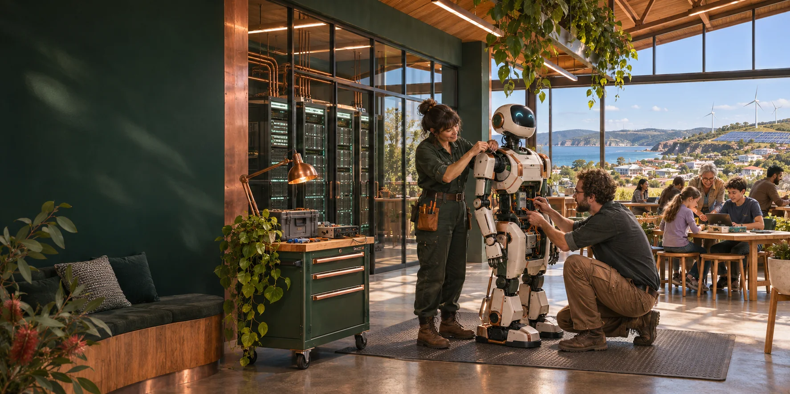
Neighbours maintaining a civic robot beside shared computing racks in an Australian community workshop.
Luke Nathan Hayes with OpenAI image generation · 7 November 2026
Licence: Strange But True Public Source Licence.
Exact image generation prompt
Use case: stylized-concept. Wide cinematic photographic architectural concept image for the Sovereign Capacity Lab homepage. An Australian community workshop with a human-scale civic robot being maintained by two adult technicians, racks of modular computing in a glazed adjoining room, and a view over a coastal town with clean-energy infrastructure. Human ownership, practical capability and a welcoming public learning space. Realistic materials, warm daylight and copper details against deep green. Wide landscape image, clear composition, main visual interest toward the centre and right with calm darker negative space on the left suitable for website heading overlay. No text, logos, signs, flags or watermark. Present as a plausible future concept, not a real product photograph.
Power page concept

An Australian town supplied by solar arrays, wind turbines, a substation and transmission lines.
Luke Nathan Hayes with OpenAI image generation · 7 November 2026
Licence: Strange But True Public Source Licence.
Exact image generation prompt
Use case: stylized-concept. Wide cinematic photorealistic editorial concept image for a clean electricity planning calculator. An Australian regional landscape at sunrise with photovoltaic arrays, distant wind turbines, a clearly visible electrical substation and transmission lines leading towards a town and industrial buildings. Show a complete practical electricity system supporting people and industry. Rich deep green and warm copper-gold sunlight, credible scale, no sci-fi beams. Panoramic composition with main subjects towards centre/right, quieter darker foreground left for a heading overlay. No words, logos, labels, signs or watermark.
Machines page concept
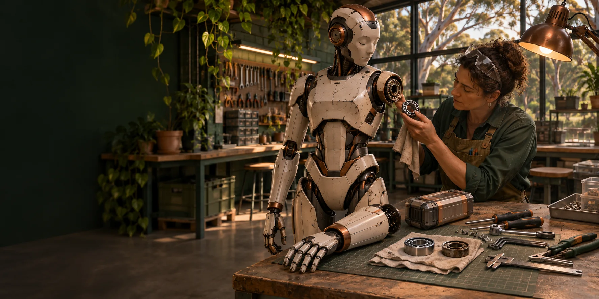
A technician inspecting a modular robot joint beside replaceable components in a repair workshop.
Luke Nathan Hayes with OpenAI image generation · 7 November 2026
Licence: Strange But True Public Source Licence.
Exact image generation prompt
Use case: stylized-concept. Wide photographic concept image of a repairable civic humanoid robot in a well-equipped Australian community repair workshop. The robot stands safely powered down beside a bench; a removed forearm module, a battery pack, bearings and simple hand tools lie neatly on the bench while an adult technician inspects a replaceable joint. Show repair, continuity and worn parts replacement, realistic practical engineering with subtle use marks. Warm copper highlights and deep green workshop shadows. Panoramic composition, key subject on centre/right, calm darker space left for a website heading. No text, brand marks, menacing military styling or watermark.
Storage page concept
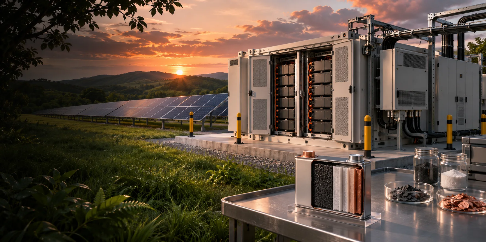
Battery storage cabinets, solar panels and a cutaway battery sample.
Luke Nathan Hayes with OpenAI image generation · 7 November 2026
Licence: Strange But True Public Source Licence.
Exact image generation prompt
Use case: stylized-concept. Wide cinematic photorealistic concept image of solar and energy storage infrastructure: a close view of a neat battery energy storage installation with protected cabinets and power electronics, solar panels extending behind it under a late afternoon sky. A small cutaway-style laboratory battery cell sample on a foreground bench suggests chemistry and materials without false labels or glowing magical effects. Realistic metal and cable details, deep greens and copper sunset tones. Panoramic composition, main interest centre/right, quiet darker left for a website heading overlay. No text, logos or watermark.
Matter page concept

Mineral specimens, refined copper and aluminium examined on a laboratory workbench.
Luke Nathan Hayes with OpenAI image generation · 7 November 2026
Licence: Strange But True Public Source Licence.
Exact image generation prompt
Use case: stylized-concept. Wide editorial photographic concept image for atomic elements and feedstocks. A mineralogy laboratory workbench with distinct copper ore, reddish iron ore, pale bauxite and a translucent crystal specimen, beside small refined copper and aluminium ingots and a microscope. Tactile geology, useful material differences and careful laboratory examination, photographed in soft natural side light. Forest green shadows and warm copper highlights. Panoramic composition, richly detailed specimens centre/right and calm negative space left for a heading overlay. No text, labels, logos, magical effects or watermark.
Ledger page concept
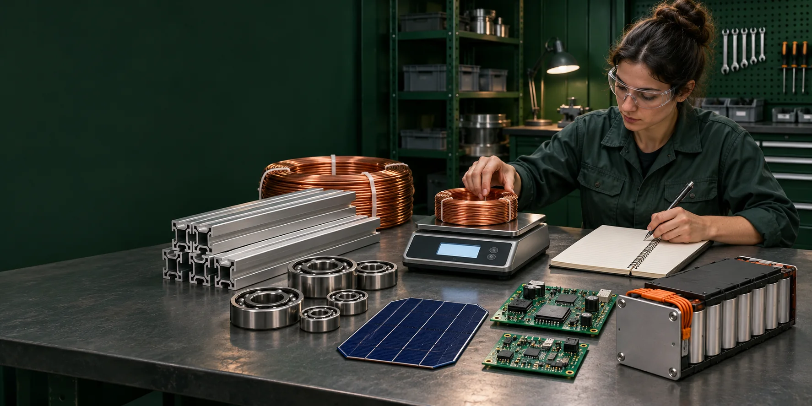
A technician weighing copper cable beside aluminium sections, bearings, electronics and a battery module.
Luke Nathan Hayes with OpenAI image generation · 7 November 2026
Licence: Strange But True Public Source Licence.
Exact image generation prompt
Use case: stylized-concept. Wide photographic concept image of a practical engineering material inventory being checked. A clean industrial workbench with neatly arranged copper cable, aluminium extrusions, steel bearings, a solar cell wafer, circuit boards and an unbranded battery module, an adult technician using a digital scale and a plain notebook. The objects are distinct and physically credible, expressing a bill of materials. Deep green workshop background with copper and silver material highlights. Panoramic layout, subjects centre/right, quiet darker space left for a heading. No readable text, brand names, logos, charts or watermark.
Space page concept
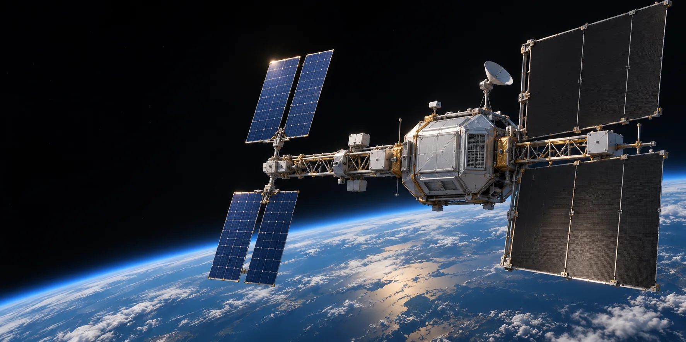
An orbital computing platform with separate solar arrays, computing equipment and radiator surfaces.
Luke Nathan Hayes with OpenAI image generation · 7 November 2026
Licence: Strange But True Public Source Licence.
Exact image generation prompt
Use case: stylized-concept. Wide cinematic realistic space engineering concept image: an orbital computing platform above the curved Earth with separate blue solar arrays, a compact shielded computing section and large dark radiator surfaces. Credible modular spacecraft geometry, sunlight catching metal structures, Earth's blue atmospheric rim and deep black space. This is an explicitly conceptual future system, not a real operating satellite. Wide landscape frame with spacecraft centre/right and darker open space on the left for website title. Avoid fantasy lasers, unrealistic city-sized structures, logos, text and watermark.
Australia page concept
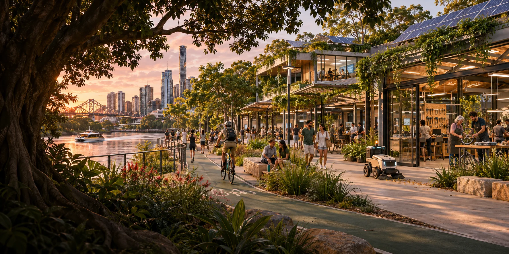
A brisbane riverside precinct with public workshops, rooftop solar and a small civic maintenance robot.
Luke Nathan Hayes with OpenAI image generation · 7 November 2026
Licence: Strange But True Public Source Licence.
Exact image generation prompt
Use case: stylized-concept. Wide cinematic photorealistic architectural concept image of a future Brisbane riverside community technology precinct approaching 2032. A recognisable subtropical Australian city with a gently winding river, pedestrian and cycle access, shaded community learning and repair workshops, rooftop solar and a small civic robot supporting maintenance. People use the public space naturally. Optimistic practical local ownership and durable legacy, warm dawn copper light and forest green vegetation. Panoramic composition, urban detail centre/right, quieter darker foreground left for heading overlay. No Olympic rings, official Games branding, text, logos, signage or watermark.
Report page concept
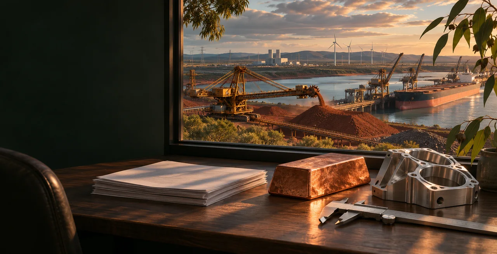
A research desk overlooking ore handling at an industrial port.
Luke Nathan Hayes with OpenAI image generation · 7 November 2026
Licence: Strange But True Public Source Licence.
Exact image generation prompt
Use case: stylized-concept. Wide editorial photographic concept image for a serious research paper about mining, materials and power. A desk beside a large window looking over a working industrial port with ore handling, cranes and distant clean power infrastructure. On the desk are a stack of unmarked research pages, a polished copper piece, an aluminium component and a caliper. Grounded Australian industrial scale, natural textures, deep green shadows and warm copper-gold afternoon light. Wide landscape, primary interest centre/right and quiet dark area left for website heading overlay. No readable text, labels, brands, logos or watermark.
Sources page concept
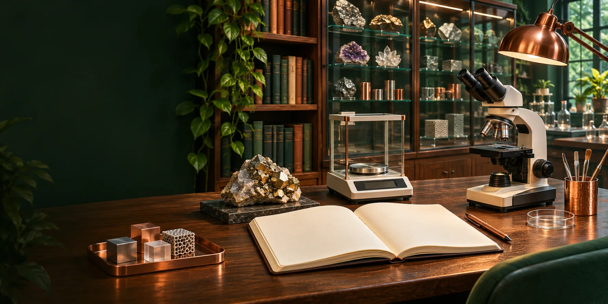
A scientific notebook, specimen, balance and microscope in a materials research library.
Luke Nathan Hayes with OpenAI image generation · 7 November 2026
Licence: Strange But True Public Source Licence.
Exact image generation prompt
Use case: stylized-concept. Wide editorial photographic concept image about checking scientific evidence. A welcoming materials research library and laboratory, with an open unmarked technical notebook, a mineral specimen, a small precision balance and a microscope on a timber desk, shelves and glass-fronted material sample cabinets in the background. Realistic scientific practice, careful observation and accessible learning. Deep forest green and warm copper highlights. Panoramic image with key subject centre/right and quiet darker left for a website heading overlay. No readable lettering, logos, arbitrary equations, graphs or watermark.
Pleiades supercomputer.jpg

Historical Pleiades computer racks at NASA Ames. Computing runs inside a larger power, cooling and networking installation.
Marco Librero, NASA Ames Research Center · 8 October 2008
Licence: Public domain. Original source or calculation data.

File preparation: Resized and converted to WebP; no compositing or content changes.
FANUC Robot Assembly Demo.jpg
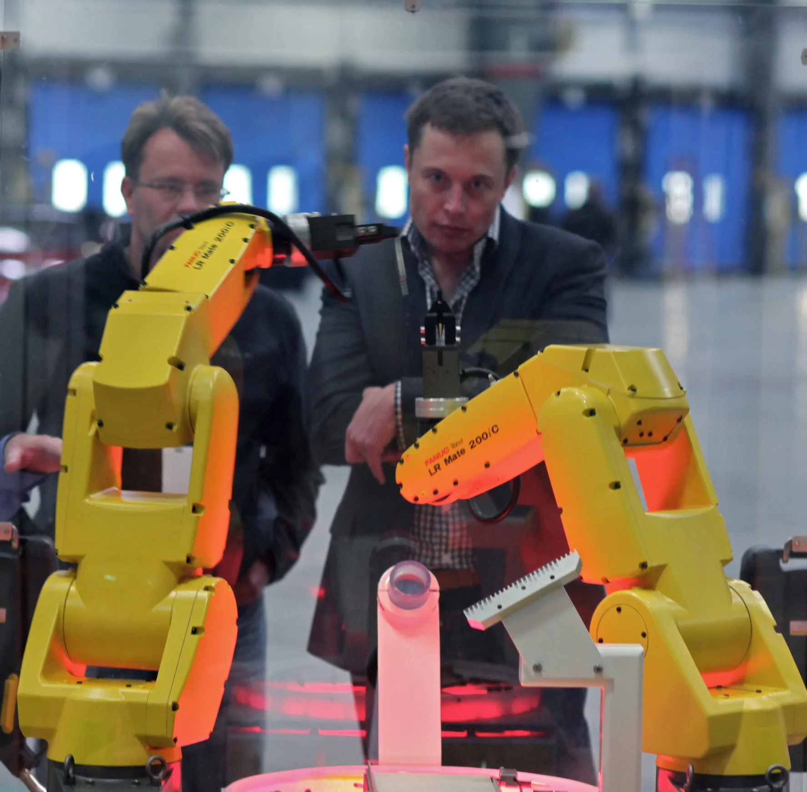
Industrial robot arms at a Tesla factory assembly demonstration in 2010. These arms illustrate the production machinery behind a growing robot fleet.
Steve Jurvetson · 27 October 2010
Licence: CC BY 2.0. Original source or calculation data.

File preparation: Resized and converted to WebP; no compositing or content changes.
Latest Tesla Optimus Humanoid Robot.jpg
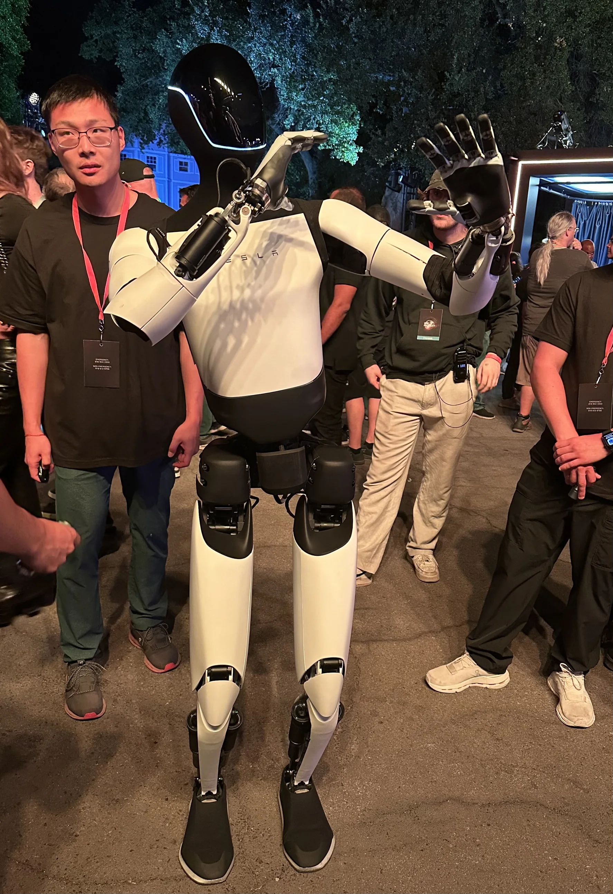
Tesla Optimus on display at the company's October 2024 event.
Steve Jurvetson · 10 October 2024
Licence: CC BY 2.0. Original source or calculation data.

File preparation: Resized and converted to WebP; no compositing or content changes.
View of Brisbane skyline from southbank.jpeg
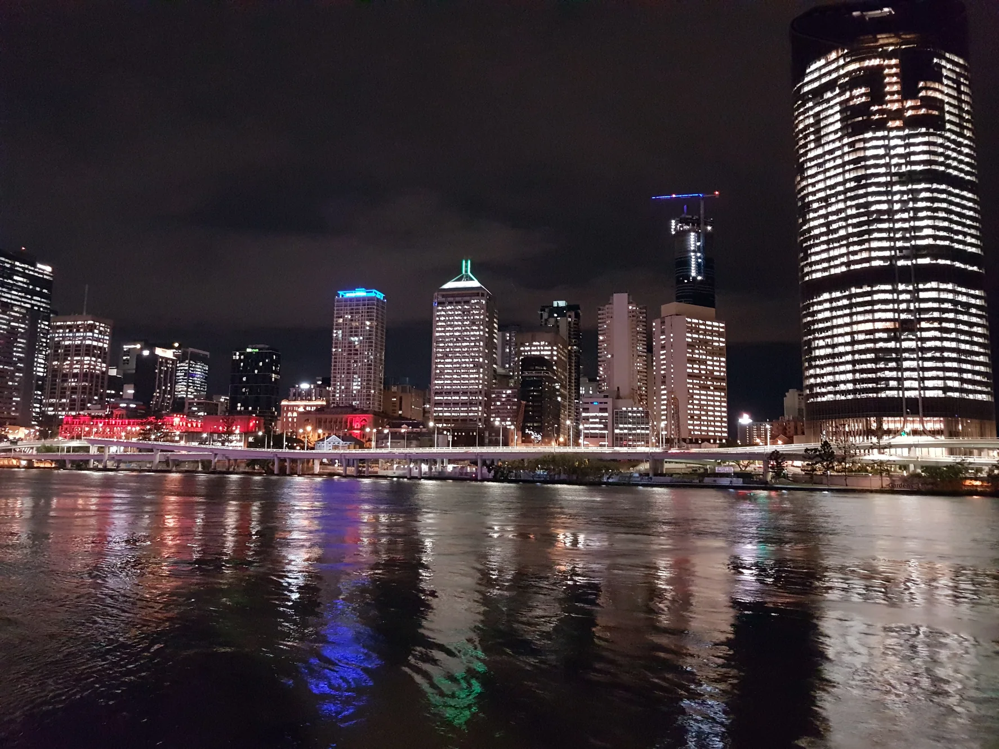
Brisbane viewed from South Bank. The 2032 horizon connects a growing city with long-term community infrastructure and skills.
Misaochan2 · 28 June 2018
Licence: CC BY 4.0. Original source or calculation data.

File preparation: Resized and converted to WebP; no compositing or content changes.
Willamsdale solar farm.jpg

Solar arrays at Williamsdale. Their nameplate rating, annual output and dependable delivery are separate quantities in the power calculations.
Grahamec · 6 December 2017
Licence: CC BY-SA 4.0. Original source or calculation data.

File preparation: Resized and converted to WebP; no compositing or content changes.
International Space Station after undocking of STS-132.jpg
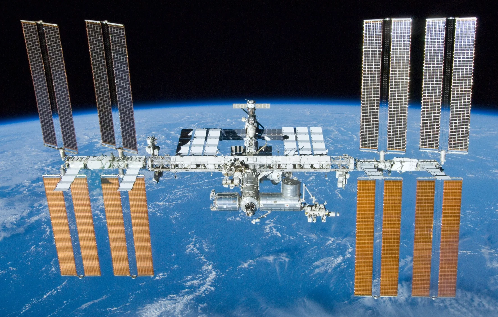
The International Space Station photographed in May 2010. Solar arrays and heat-rejection hardware show two distinct jobs required by equipment operating in orbit.
NASA/Crew of STS-132 · 23 May 2010
Licence: Public domain. Original source or calculation data.

File preparation: Resized and converted to WebP; no compositing or content changes.
Bingham Canyon mine 2007 - NASA Image.jpg

Bingham Canyon copper mine, photographed from orbit in 2007. Ore throughput includes much more rock than the refined metal ultimately delivered.
NASA · 20 September 2007
Licence: Public domain. Original source or calculation data.

File preparation: Resized and converted to WebP; no compositing or content changes.
Annual manufacture and accumulated equipment
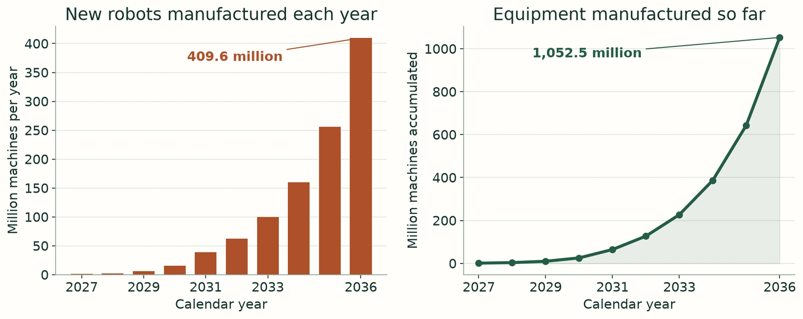
The accelerated scenario makes 409.6 million new robots during 2036 and accumulates about 1.053 billion manufactured over 2027 to 2036. The operating fleet then deducts actual permanent retirements. Annual flow and accumulated equipment answer different questions.
Sovereign Capacity Lab calculations prepared for Luke Nathan Hayes · 7 November 2026
Licence: Strange But True Public Source Licence. Original source or calculation data.
Retain repair and renew
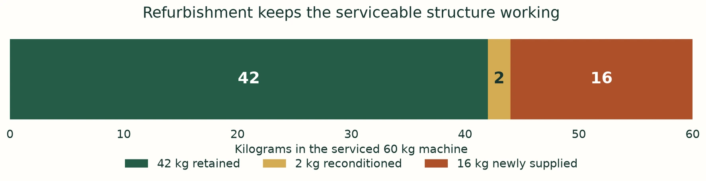
In the worked overhaul, a 60 kg robot retains 42 kg. Its 18 kg module allowance can include 2 kg of reconditioned parts and 16 kg of newly supplied material. One million such jobs therefore need 16,000 tonnes of new modules while retaining 42,000 tonnes of equipment.
Sovereign Capacity Lab calculations prepared for Luke Nathan Hayes · 7 November 2026
Licence: Strange But True Public Source Licence. Original source or calculation data.
Power during the day and stored energy overnight
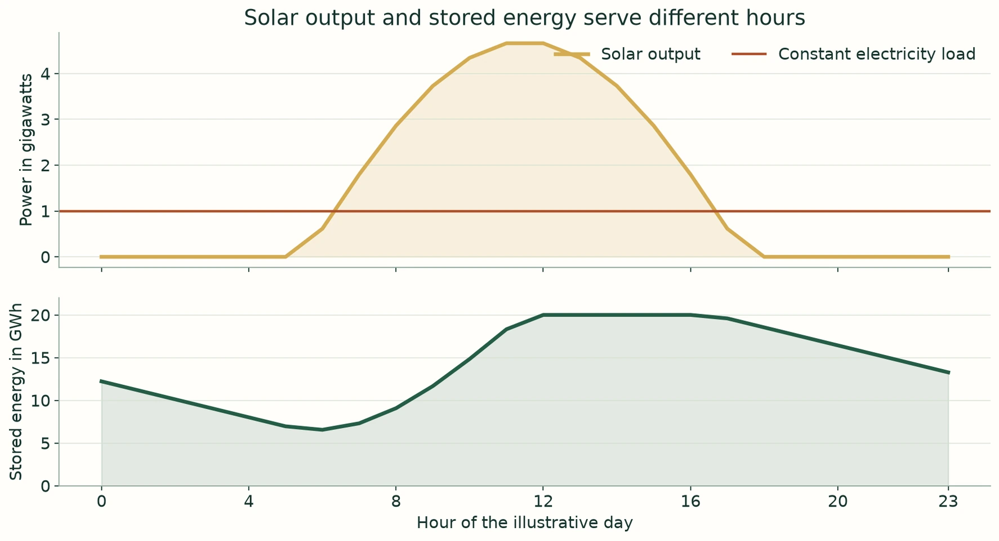
Illustrative repeated day: 6 GW of solar nameplate at 25 per cent capacity factor supplies a constant 1 GW load with 20 GWh of usable internal storage and 95 per cent efficiency in each direction. The plot separates instantaneous power from stored energy. Weather and seasonal adequacy need their own time series.
Sovereign Capacity Lab calculations prepared for Luke Nathan Hayes · 7 November 2026
Licence: Strange But True Public Source Licence. Original source or calculation data.
The elements inside source compounds

Chemical composition supplies one conversion. Ore grade supplies another. Recovery supplies a third. The feedstock calculator applies all three, so a compound, an ore and refined metal remain separate quantities.
Sovereign Capacity Lab calculations prepared for Luke Nathan Hayes · 7 November 2026
Licence: Strange But True Public Source Licence. Original source or calculation data.
Generated site icon
Generated on 7 November 2026 for Luke Nathan Hayes using built-in image generation. Used under the Strange But True Public Source Licence. The exact prompt is retained in the downloadable prompt record above.